Creating TV store icons, thumbnails and screenshots
Introduction
First impressions are very important for a successful product. It is therefore vital to take your time on graphics that represent your app, and polish them before you publish your work. This short guide provides some tips on making your application’s icon and other graphics the best they can be.
There are three types of graphic that represent applications in the TV Store: Icons, thumbnails, and screenshots. Let’s look at each of these in turn.
Icons
Icons are the simplest and smallest graphical representation of an app.
Size and format
In the TV Store we require submission of a 512px x 512px, 24bit PNG file, but in the current UI we display only a 96px x 96px scaled version. Bear in mind that you are designing an icon for a size roughly around 3cm x 3cm in the real world. The large size requirement is for further scaling capabilities, if needed in the future.
Style
We don’t expect compliance with any specific style guidelines in your app icons, but we do expect you to think carefully about your icon’s content. It is recommended that you keep your icons consistent with the style of your apps. For example, a photorealistic, serious design will not be a good representation of a cartoony kids app.
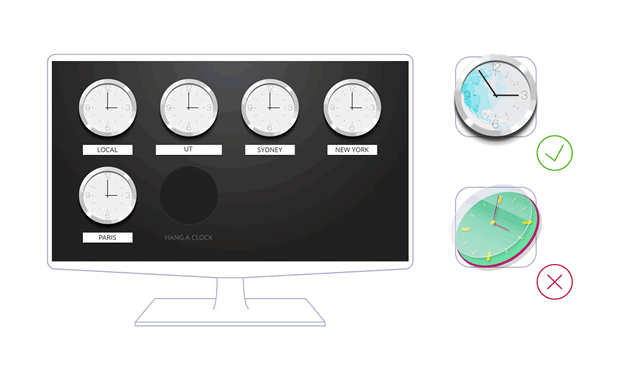
Well designed icons in general are simple, recognisable and intuitive. Also remember that they should be legible on small TVs as well as larger ones. Think about the content of your icon. You only really have space to focus on one concept in an icon, and it will generally be one of three things:
A pictogram: A picture of something from real life, such as a video camera, tree, dog or flag.
An ideogram: An idea of something, such as trust, information, learning, or speed.
An arbitrary invention: These don’t commonly exist in real life, but sometimes you’ll want a more abstract invention to represent your app. For example, your app might be represented by some kind of abstract shape or strange invention.
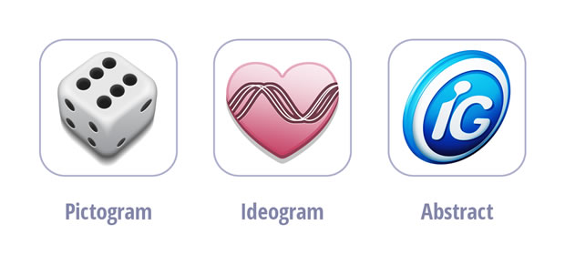
Next, use established, recognised conventions where possible. Think of well-known icons for ‘information’, ‘play’ and ‘shopping cart’, for example. Using such conventions will immediately make your icon more intuitive and recognisable. The Noun project (http://thenounproject.com/) is a great place for researching icon styles and conventions.
Another general tip is to just make your TV app icons fun! Most apps on TV are pure entertainment, so formal, system icons may look out of place.
Less is more
An icon needs to be simple so it will work at small sizes — don’t employ too many complex shapes in your icon, and stay away from using too much text. Anything more than a simple, short word will reduce clarity below an acceptable level.
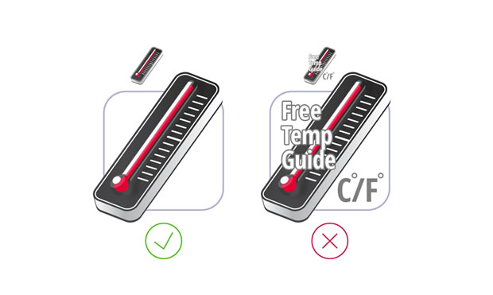
Effects
Moving on from ‘Less is more’, think carefully about graphics effects you use in your icons. Drop shadows, heavy bevels, glows and halos will not replace drawing skills, metaphors, and great ideas, and may reduce clarity.
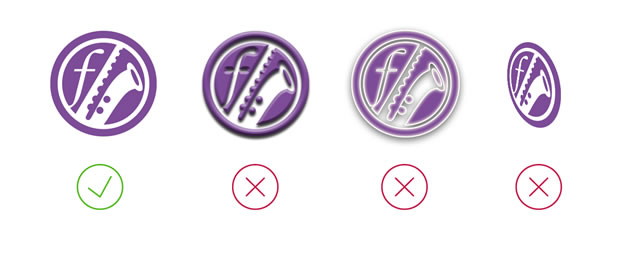
If you decide to use shadows, highlights and reflections in your icons, be consistent with the direction of light, otherwise the icon will look terrible. Unnecessary perspective for a two dimensional icon can also spoil the effect.
Background
Make sure there is a good degree of contrast between your icon and the background it appears on. All icons in store are presented on top of dark placeholders — if you use PNG icons with alpha channels, or dark icons, your icon could become almost invisible. If you are planning on designing a dark icon, you should consider mounting it on top of your own custom background color.
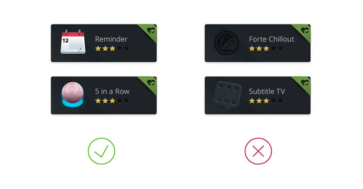
Thumbnails
Your thumbnails are where you can give your creativity free rein, creating beautiful app cover art. By default, an app’s thumbnail is used as the graphic representation of an icon in the app store, and the launch shortcut in the ‘My Apps’ section.
Technical details
The required size and format for thumbnail graphics is 480px x 270px, in JPG format.
Style
As with your icons, we don’t expect any particular style to be used for your thumbnails, however it should be pleasant to the eye, and consistent with the style of your app and the TV store.
You have a lot more space to play with when designing a thumbnail, but again make them fun, make sure they are a good representation of your apps that will draw users in, and be careful not to make them too cluttered.
Background
Thumbnails are displayed on pre-designed placeholders, so there’s no need to shape your thumbnails in any way. Any additional effects applied to thumbnails — such as bevels or shadows — are not allowed.
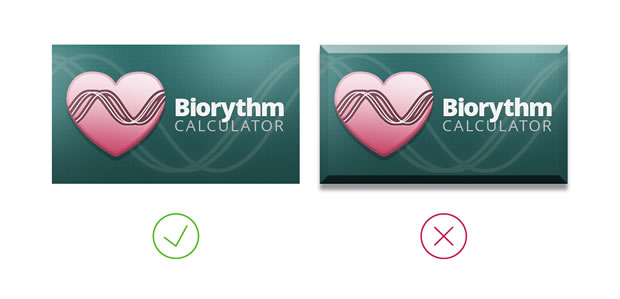
Less is more
By reducing the amount of extraneous content, you can emphasise more important elements of your composition. Less is more in many cases.
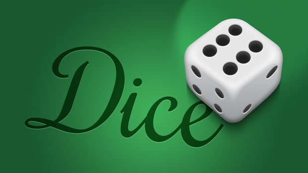
Crop
When deciding what to show in a thumbnail, you should consider focusing just on the most important details or features. If your thumbnail is a screenshot of your app’s main UI, consider cropping it down to just show the most important bit, rather than the whole lot.
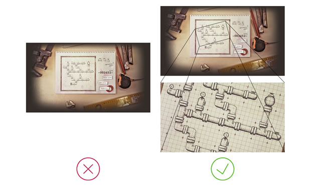
Text
If you decide to include text on your thumbnail, limit it to a title, or a single sentence. Including too much text will look messy and lose clarity.
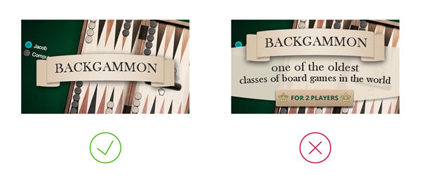
Colour
There is no better way to give your artwork life than a tasty colour palette. Look around you and get inspiration from a wide variety of sources, online and in nature. There are also a lot of tools around that can help you choose a stunning colour set, for example colorlovers.com.

Contrast
Contrast between foreground and background colours is important in your thumbnails, however in a larger graphic contrast can also be controlled by size, position, form, light and shadow.
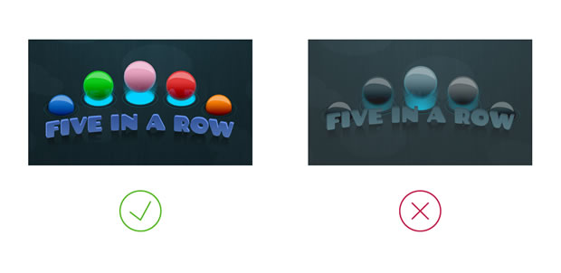
White space
It is also important to consider the space in between your graphic elements. Not having enough whitespace can make everything seem messy and cluttered, and reduce the impact your thumbnails have.
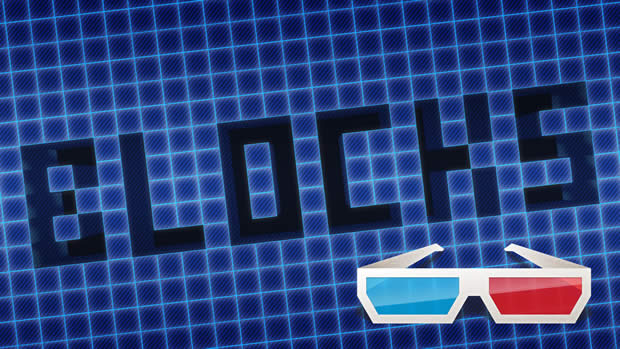
Screenshots
It is important to include screenshots in your app’s app store page to show users what functionality the app has, and entice them to install it. When you include more than one the app store creates a nice fading gallery in the app description page.
Size
Screenshots of your application are required to be 1280px x 720px, in JPG format. These need to be exactly this size, as rescaling and cropping is not applied.
Further resources
You should also consider getting inspiration for your app graphics from other sources. Have a look at other apps, other app stores, and web sites such as the following:
Inspiration
http://thenounproject.com/
http://www.dribbble.com/
http://www.iconfinder.net/
http://www.behance.net/
Tutorials
http://http://psd.tutsplus.com/
http://vector.tutsplus.com/
- http://www.smashingmagazine.com/
Chris Mills

Chris Mills is a web technologist, open standards evangelist and education agitator, currently working at Opera Software in the developer relations team. He spends most of his time writing articles about web standards for dev.opera.com and other publications (such as .net mag and A List Apart), giving talks at universities and industry conferences, and lobbying universities to improve their web education courses. He believes that education is the answer to everything, but in particular he is passionate about using education to improve the overall content quality, accessibility, usability and future-viability of the Web.
He is the creator of the Opera Web standards curriculum, contributor to the WaSP InterACT project, and coauthor of InterACT with web standards: A Holistic Approach to Web Design. In August 2011, he also accepted the position of co-chair of the newly-formed Web Education Community Group.
Outside work he is a heavy metal drummer, proud father of three and lover of good beer.
This article is licensed under a Creative Commons Attribution 3.0 Unported license.
Comments
No new comments accepted.